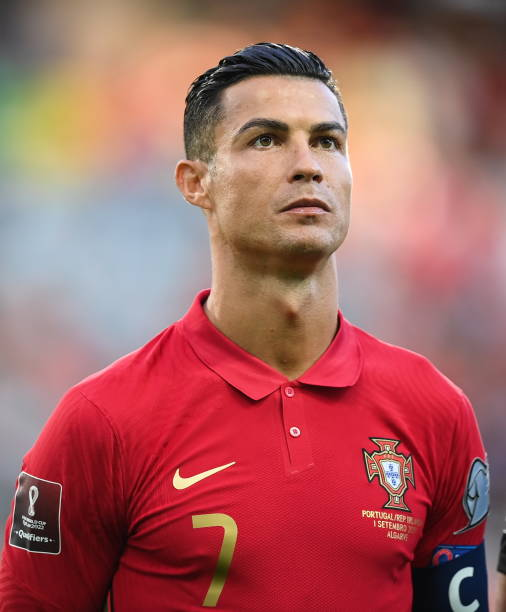

Cristiano Ronaldo
Infância
Cristiano Ronaldo dos Santos Aveiro nasceu na cidade de Funchal, na Ilha da Madeira, Portugal, no dia 05 de fevereiro de 1985. Filho caçula do jardineiro José Diniz Pereira Aveiro e da cozinheira Maria Dolores dos Santos Aveiro, quando criança passava a maior parte de seu dia jogando bola na rua com os amigos.
Carreira
Cristiano Ronaldo começou sua carreira aos 9 anos de idade quando estreou no Futebol Clube Andorinha, na Ilha da Madeira. Com grandes habilidades logo despertou o interesse do maior clube da ilha, o Nacional, que o contratou em 1995. No dia 14 de abril de 1997, Cristiano Ronaldo fez o teste no Sporting Lisboa e, com apenas 11 anos entrou para as categorias de base do clube, onde jogou no Sub 16, Sub 17 e no Sub 18. Em 2003, Cristiano Ronaldo chamou a atenção do técnico do Manchester United , da Inglaterra. Foi contratado para substituir o jogador David Beckham, que havia sido contratado pelo Real Madrid, da Espanha. Em 2008, depois de muitas especulações, Cristiano Ronaldo foi para o Real Madrid, e participou da temporada 2009-2010. Sua contratação foi a mais cara do clube, que tinha outros jogadores de destaque mundial como Kaká, Zidane, Ronaldo e Roberto Carlos, que fizeram parte da primeira fase das grandes estrelas do time espanhol, que ficaram conhecidos como os Intergalácticos. No dia 10 de julho de 2018, foi anunciada a transferência de Cristiano Ronaldo para a Juventus. Sua estreia foi no dia 17 de agosto na série A do Campeonato Italiano, no jogo Juventus e Chievo. Em 2021, após doze anos, Cristiano volta a jogar pelo Manchester United. Cristiano Ronaldo foi convocado pela Seleção Portuguesa e participou da Eurocopa em 2004, onde foi vice-campeão jogando com a Grécia. Na Copa do Mundo de 2006, ficou em 4.° lugar com a seleção de Portugal e foi considerado um dos melhores do mundo. Em 2016, Portugal foi o Campeão Europeu.
Títulos de Cristiano Ronaldo
- Sporting: Supertaça de Portugal 2002.
- Manchester United: Copa da Inglaterra 2003-2004, 2007-2008; Copa da Liga Inglesa 2005-2006; Campeonato Inglês 2006-07, 2007-08; Liga dos Campeões da Europa 2007-2008; Mundial de Clubes 2008.
- Real Madrid: Campeonato do Mundo de Clubes da FIFA: 2014, 2016, 2017; Liga dos Campeões da UEFA: 2013–14, 2015–16, 2016–17, 2017–18; Supercopa da UEFA: 2014, 2017; Campeonato Espanhol: 2011–12, 2016–17; Copa do Rei: 2010–11, 2013–14; Supercopa da Espanha: 2012, 2017.
- Juventus: Supercopa da Itália 2018; Campeonato italiano 2018/19; Campeonato italiano 2019/10.
- Seleção Portuguesa: Campeonato Europeu 2018; Campeão da Liga das Nações da UEFA 2018/19.
Prêmios individuais
- Bola de Ouro da Fifa 2013-2014;
- Homem do jogo da Supercopa da UEFA 2014;
- Melhor Jogador da UEFA 2013-14, 2015-16 e 2016-17;
- Bola de Ouro da UEFA 2007-08, 2010-11, 2-13-14, 2014-15;
- Bola de Ouro do Campeonato do Mundo de Clubes 2016;
- Futebolista do Ano em Portugal 2007, 08, 09, 11, 12, 13, 15, 16, 17 e 18;
- Melhor jogador do mundo pela ESPY Awards 2018;
- Chuteira de Ouro da revista France Football.